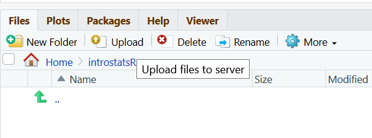
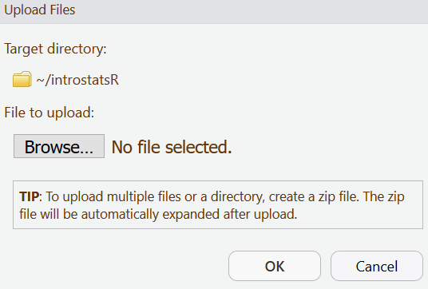

4 The RStudio Interface
In RStudio Server you should see a window that looks like the image below.
The panel on the left is where the action happens. It’s called the console. Every time you launch RStudio, it will have the same text at the top of the console telling you the version of R that you’re running.
The panel in the upper right contains your workspace. This shows the variables and objects you define during your R session, and a history of the commands that you enter.
Any plots that you generate will show up in the panel in the lower right corner. This is also where you can browse your files, and access help files, and upload and download files.
4.1 File Management
We will start by making a course folder in RStudio Server that you can use to store all your R work for the course on the web. Click on the Files tab in the lower right panel, and the New Folder tab. Enter the file name introstatsR in the window that opens, and click OK. You should now have a new folder!
Next, go to the course site, and download the data set posted for this week’s lab session. Put it in a location on your computer that you will remember! I highly suggest you also make an introstatsR folder on your computer to store all your material for this course. Check in with the instructor if you don’t know how to do this!
To have access to files stored on the hard drive on your computer in RStudio Server, you need to upload them from your computer to the server. To upload the data set click on the RStudio Server introstatsR folder once, and click the upload button, like so:

In the window that opens, browse to where you stored your data set on your computer, click on the data file, then click OK. Open the introstatsR folder again in RStudio Server, to make sure the data is in there. You can upload any sort of file like this.
We are not doing anything with this toydata file, except learning how to upload it.
